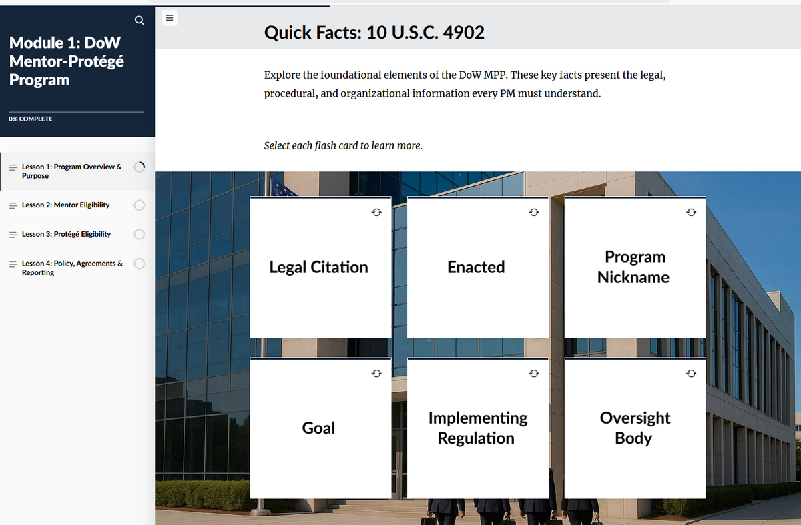
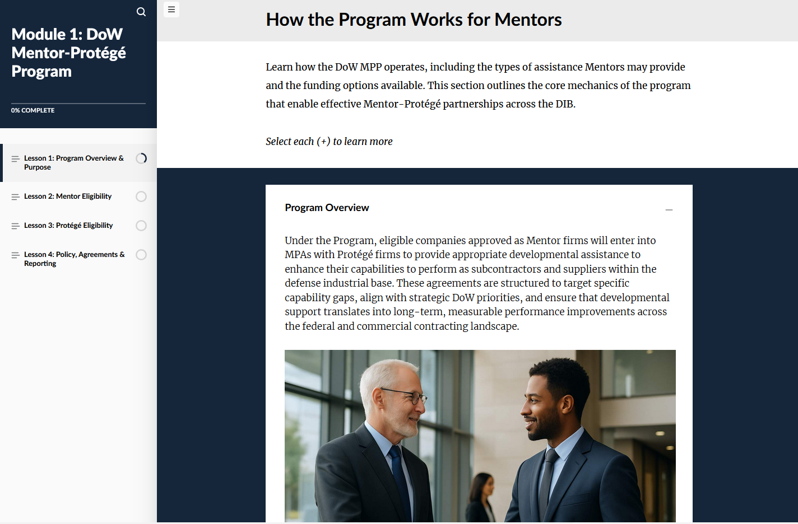
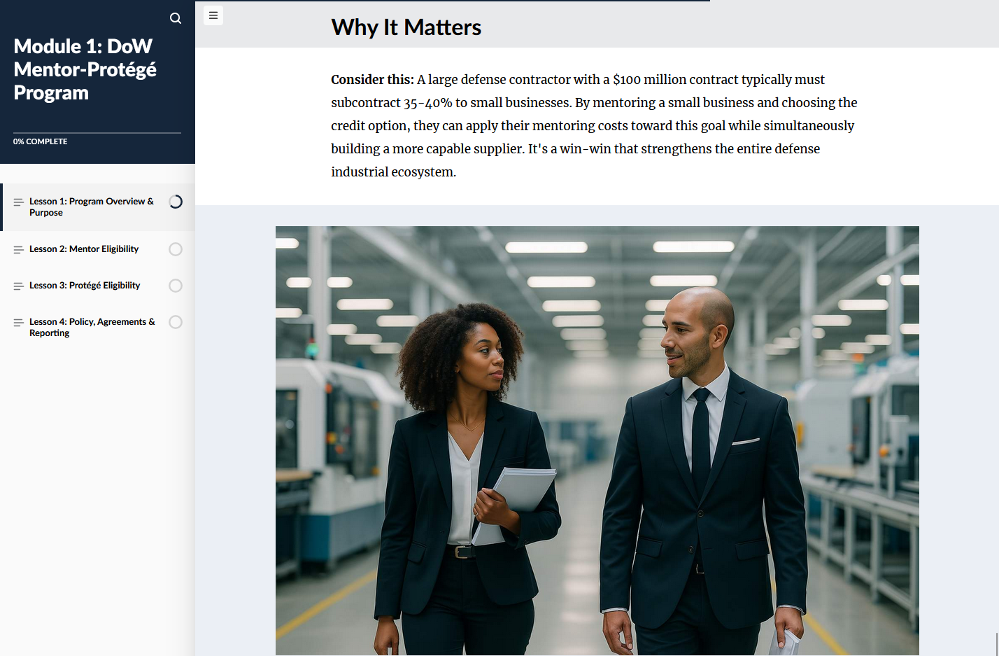
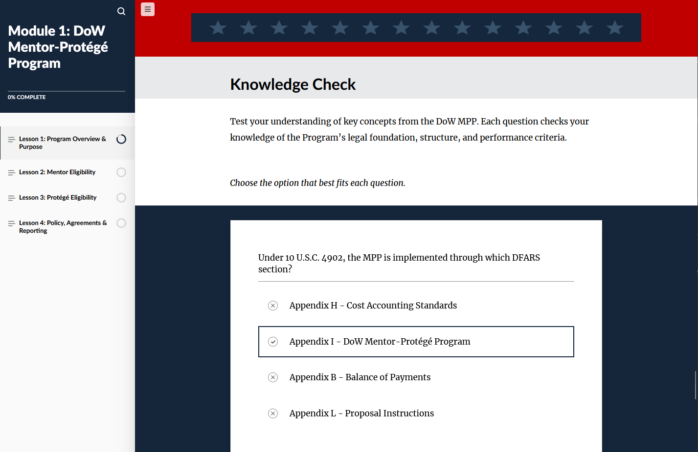

Component Deep-Dive
Video Introductions & Course Entry

Component Deep-Dive
Learning Objectives & SOP Alignment


Component Deep-Dive
Interactive Learning Components



Component Deep-Dive
Scenarios, Storyline & Knowledge Checks



Component Deep-Dive
Summary & Review